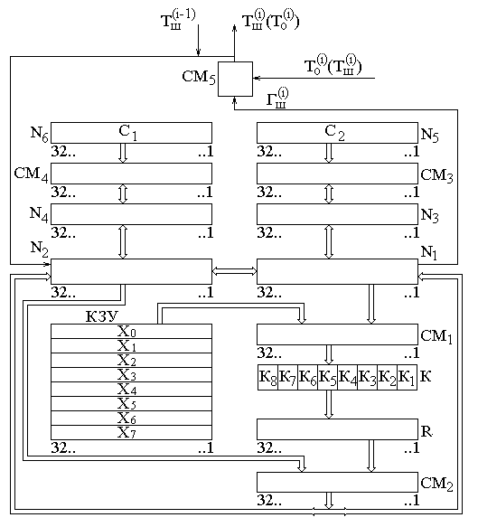

Алгоритм

- Каждый блок разбивается на два «подблока» (левый и правый, соотвественно).
- Исходное заполнение правого блока записывается в левый блок на выходе.
- Над правым блоком производится криптографическое преобразование с применением ключевых данных.
- Левый (исходный) и правый (преобразованный) блоки складываются по модулю 2 в сумматоре по модулю 2.
- Так повторяется несколько раз.